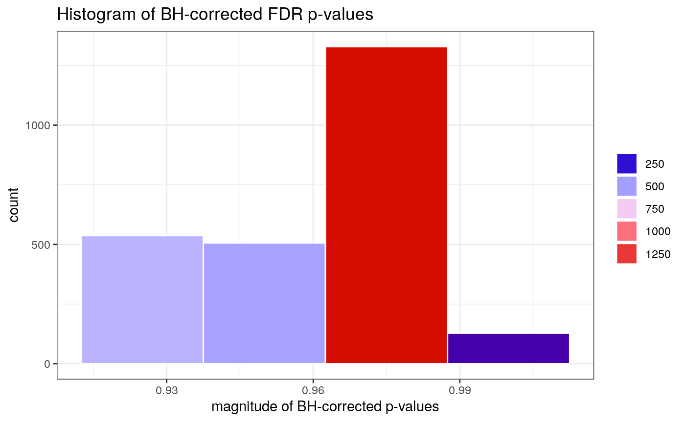
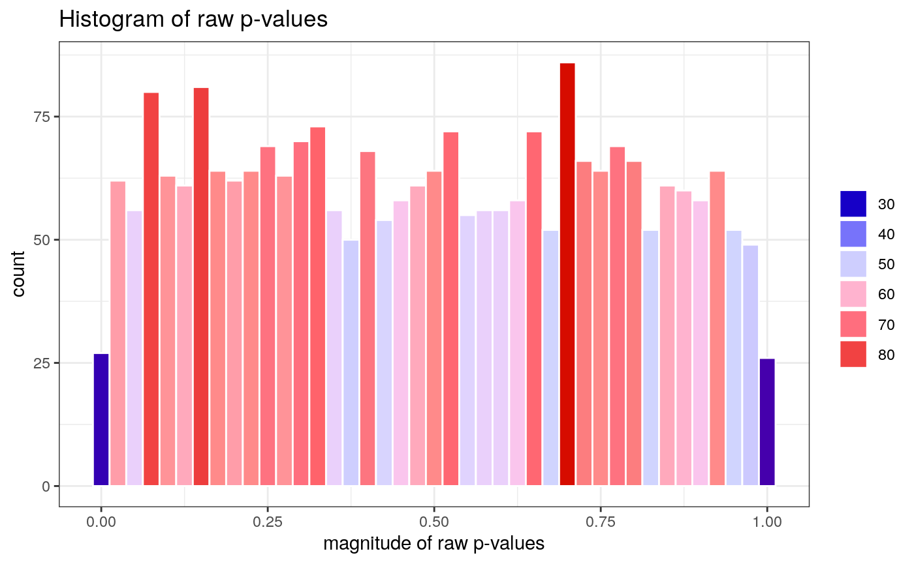
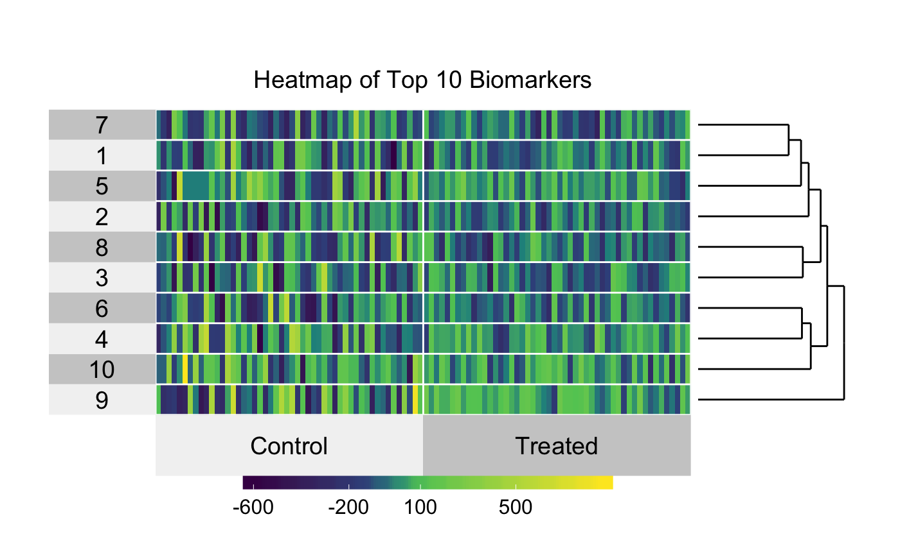
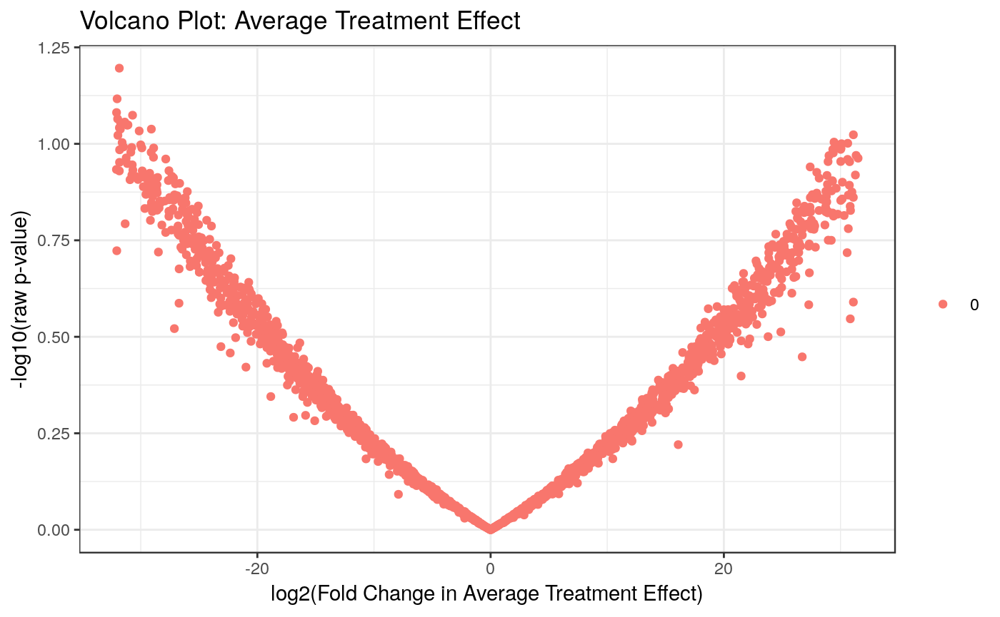

library(dplyr)
library(biotmle)
library(biotmleData)
suppressMessages(library(SummarizedExperiment))
"%ni%" = Negate("%in%")Here, we briefly work through how to use the biotmle package with data generated by next-generation sequencing technologies, which, in contrast to microarray technologies, produce measurements in the form of discrete counts.
set.seed(6423709)
n <- 50
g <- 2500
cases_pois <- 50
controls_pois <- 10
ngs_cases <- as.data.frame(matrix(replicate(n, rpois(g, cases_pois)), g))
ngs_controls <- as.data.frame(matrix(replicate(n, rpois(g, controls_pois)), g))
ngs_data <- as.data.frame(cbind(ngs_cases, ngs_controls))
exp_var <- c(rep(1, n), rep(0, n))
batch <- rep(1:2, n)
covar <- rep(1, n * 2)
design <- as.data.frame(cbind(exp_var, batch, covar))
head(ngs_data[, 1:7])## V1 V2 V3 V4 V5 V6 V7
## 1 69 61 39 46 50 57 43
## 2 42 59 50 54 44 53 54
## 3 41 49 52 54 50 58 34
## 4 30 44 49 44 46 36 61
## 5 50 56 45 44 46 61 58
## 6 61 50 47 53 49 54 67se <- SummarizedExperiment(assays = list(counts = DataFrame(ngs_data)),
colData = DataFrame(design))
se## class: SummarizedExperiment
## dim: 2500 100
## metadata(0):
## assays(1): counts
## rownames: NULL
## rowData names(0):
## colnames(100): V1 V2 ... V49.1 V50.1
## colData names(3): exp_var batch covarrnaseqTMLEout <- biomarkertmle(se = se,
varInt = 1,
ngscounts = TRUE,
parallel = TRUE,
family = "gaussian",
g_lib = c("SL.mean", "SL.glm",
"SL.randomForest"),
Q_lib = c("SL.mean", "SL.glm",
"SL.randomForest", "SL.nnet")
)
head(eif(rnaseqTMLEout)$E[, seq_len(6)])## [,1] [,2] [,3] [,4] [,5] [,6]
## result.1 -329.83655 -212.28070 160.39144 32.96832 -36.05786 -146.77124
## result.2 91.43805 -129.00196 -39.20680 -47.18052 44.29473 -30.83862
## result.3 102.01072 -294.65959 -77.65629 -376.36991 -61.66602 -441.74551
## result.4 323.94443 93.76761 13.80324 93.71017 47.56326 224.33603
## result.5 11.71456 -148.33216 93.43461 47.79556 61.82086 -229.99698
## result.6 -183.73280 -4.00971 45.02578 -53.02987 -4.00971 -69.37162## # A tibble: 6 x 7
## logFC AveExpr t P.Value adj.P.Val B ID
## <dbl> <dbl> <dbl> <dbl> <dbl> <dbl> <chr>
## 1 -57.8 -57.8 -3.29 0.00121 0.930 -4.59 result.673
## 2 -55.9 -55.9 -3.20 0.00160 0.930 -4.60 result.1091
## 3 62.4 62.4 3.19 0.00168 0.930 -4.60 result.482
## 4 -59.7 -59.7 -3.10 0.00221 0.930 -4.60 result.1774
## 5 -57.6 -57.6 -3.06 0.00255 0.930 -4.60 result.991
## 6 -77.2 -77.2 -2.98 0.00327 0.930 -4.60 result.1109

varInt_index <- which(names(colData(se)) %in% "exp_var")
designVar <- as.data.frame(colData(se))[, varInt_index]
design <- as.numeric(designVar == max(designVar))
heatmap_ic(x = limmaTMLEout,
row.dendrogram = TRUE,
clustering.method = "hierarchical",
design = design, FDRcutoff = 1.0, top = 10)

## R version 3.6.1 (2019-07-05)
## Platform: x86_64-pc-linux-gnu (64-bit)
## Running under: Ubuntu 18.04.3 LTS
##
## Matrix products: default
## BLAS: /usr/lib/x86_64-linux-gnu/openblas/libblas.so.3
## LAPACK: /usr/lib/x86_64-linux-gnu/libopenblasp-r0.2.20.so
##
## locale:
## [1] LC_CTYPE=en_US.UTF-8 LC_NUMERIC=C
## [3] LC_TIME=en_US.UTF-8 LC_COLLATE=en_US.UTF-8
## [5] LC_MONETARY=en_US.UTF-8 LC_MESSAGES=en_US.UTF-8
## [7] LC_PAPER=en_US.UTF-8 LC_NAME=C
## [9] LC_ADDRESS=C LC_TELEPHONE=C
## [11] LC_MEASUREMENT=en_US.UTF-8 LC_IDENTIFICATION=C
##
## attached base packages:
## [1] parallel stats4 stats graphics grDevices utils datasets
## [8] methods base
##
## other attached packages:
## [1] SummarizedExperiment_1.14.1 DelayedArray_0.10.0
## [3] BiocParallel_1.18.1 matrixStats_0.55.0
## [5] Biobase_2.44.0 GenomicRanges_1.36.1
## [7] GenomeInfoDb_1.20.0 IRanges_2.18.3
## [9] S4Vectors_0.22.1 BiocGenerics_0.30.0
## [11] biotmleData_1.8.0 biotmle_1.11.0
## [13] dplyr_0.8.3 BiocStyle_2.12.0
##
## loaded via a namespace (and not attached):
## [1] ggdendro_0.1-20 foreach_1.4.7
## [3] assertthat_0.2.1 BiocManager_1.30.9
## [5] GenomeInfoDbData_1.2.1 superheat_0.1.0
## [7] yaml_2.2.0 globals_0.12.4
## [9] pillar_1.4.2 backports_1.1.5
## [11] lattice_0.20-38 glue_1.3.1
## [13] limma_3.40.6 digest_0.6.22
## [15] XVector_0.24.0 colorspace_1.4-1
## [17] htmltools_0.4.0 Matrix_1.2-17
## [19] pkgconfig_2.0.3 listenv_0.7.0
## [21] bookdown_0.14 zlibbioc_1.30.0
## [23] purrr_0.3.3 scales_1.0.0
## [25] tibble_2.1.3 ggplot2_3.2.1
## [27] lazyeval_0.2.2 cli_1.1.0
## [29] magrittr_1.5 crayon_1.3.4
## [31] memoise_1.1.0 evaluate_0.14
## [33] fs_1.3.1 future_1.14.0
## [35] fansi_0.4.0 MASS_7.3-51.4
## [37] SuperLearner_2.0-25-9000 tools_3.6.1
## [39] stringr_1.4.0 munsell_0.5.0
## [41] glmnet_2.0-18 ggsci_2.9
## [43] compiler_3.6.1 pkgdown_1.4.1
## [45] rlang_0.4.1 grid_3.6.1
## [47] RCurl_1.95-4.12 iterators_1.0.12
## [49] labeling_0.3 bitops_1.0-6
## [51] rmarkdown_1.16 gtable_0.3.0
## [53] codetools_0.2-16 R6_2.4.0
## [55] nnls_1.4 knitr_1.25
## [57] doFuture_0.8.1 utf8_1.1.4
## [59] zeallot_0.1.0 rprojroot_1.3-2
## [61] desc_1.2.0 stringi_1.4.3
## [63] tmle_1.4.0.1 Rcpp_1.0.2
## [65] vctrs_0.2.0 tidyselect_0.2.5
## [67] xfun_0.10